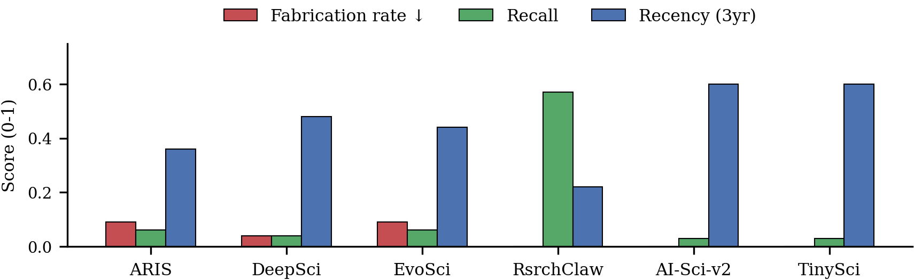

Literature review
Fabrication is rare: 0.05 on average over 129 evaluated runs. The weakness is volume and coverage. The leading tools cite 6.6 to 6.9 references on average against 50 to 58 in the original papers, and recall is 0.03 to 0.06 for five of six tools. AI-Researcher produced no literature-review output.

Idea generation
| Tool | Novelty | Feasibility | Clarity | Composite |
|---|---|---|---|---|
| EvoScientist | 2.48 | 3.39 | 3.46 | 2.85 |
| DeepScientist | 2.96 | 3.04 | 3.43 | 3.08 |
| ARIS | 2.91 | 3.33 | 3.79 | 3.20 |
| Tiny-Scientist | 3.57 | 3.00 | 3.77 | 3.42 |
| AI Scientist-v2 | 2.19 | 2.70 | 2.62 | 2.35 |
| AutoResearchClaw | 2.07 | 1.93 | 2.07 | 1.93 |
Scores are on a 1 to 5 scale, averaged over evaluated runs (14 to 34 per tool). The composite is a holistic score assigned by the judge. AI-Researcher is excluded because it produced an idea artifact in only 1 of 34 runs.
Novelty level of the 103 ideas the tools generated themselves:
Experiment execution
| Metric | EvoScientist | DeepScientist | ARIS | Tiny-Scientist | AI Scientist-v2 | AutoResearchClaw | AI-Researcher |
|---|---|---|---|---|---|---|---|
| Experiment success rate | 88% | 94% | 85% | 21% | 56% | 0% | 24% |
| Idea-to-code consistency (1 to 5) | 3.47 | 3.14 | 3.45 | 1.33 | 1.76 | 1.22 | n/a |
| Setup coverage (0 to 1) | 0.90 | 0.92 | 0.93 | 0.29 | 0.73 | 0.24 | 0.95 |
| Ablation coverage (0 to 1) | 0.36 | 0.42 | 0.66 | 0.00 | 0.48 | n/a | n/a |
| Ablation pass rate | 38% | 22% | 28% | 0% | 27% | n/a | n/a |
| Significance test rate | 50% | 33% | 20% | 0% | 0% | n/a | n/a |
| Result-to-paper consistency (1 to 5) | 3.53 | 3.32 | 3.16 | 1.43 | 2.33 | n/a | 3.00 |
| Concealment rate, lower is better | 24% | 21% | 11% | 29% | 53% | n/a | 50% |
n/a: at most one evaluable run, or no paper.
Case study: domain priors in the executor
AI Scientist-v2's experiment agent runs prompts that hard-code a machine-learning workflow, and Tiny-Scientist defaults to a scikit-learn-style routine. On SE tasks such an executor reduces the study to a toy ML experiment. AI Scientist-v2 runs on synthetic data in 31 of 34 runs. In one Tiny-Scientist run, header-file splitting is implemented as a logistic regression on the Iris dataset.
The 19 confirmed concealment cases
The concealment rate in the table above counts runs flagged by an LLM as suspected. Manual inspection of the 104 reviewed papers confirmed 19 cases (18%).
| Category | Cases |
|---|---|
| Selective reporting: omitted failures, undisclosed downscaling, avoided baseline wins | 13 |
| Slight misreport or overstatement | 4 |
| Fabricated numbers | 2 |